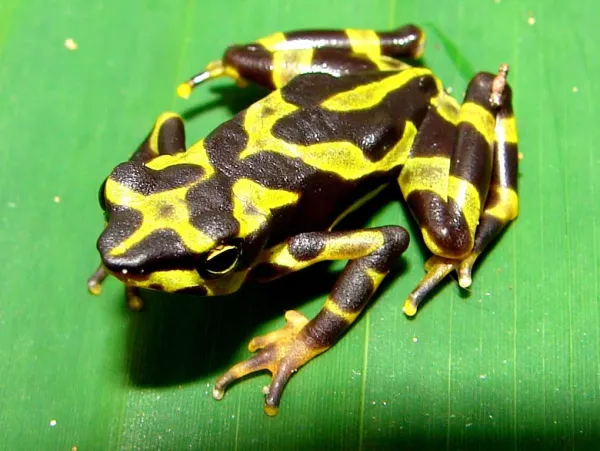
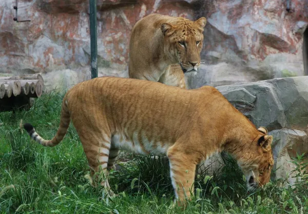
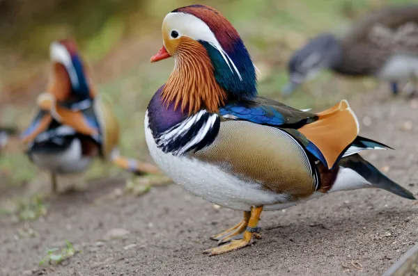
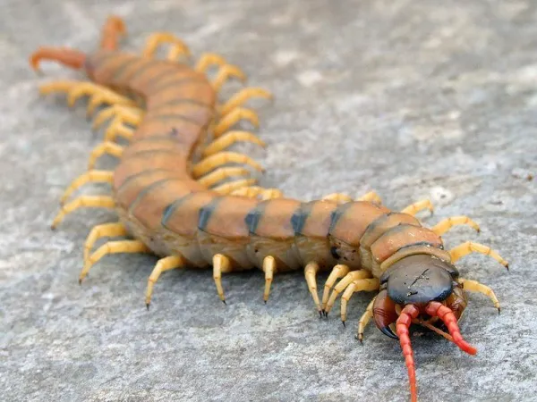
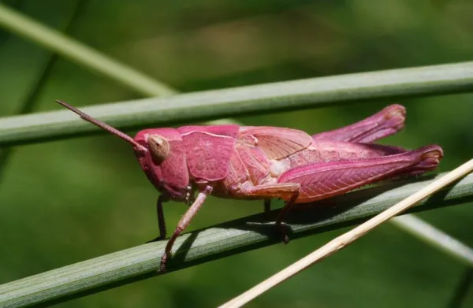

There are several species of Atelopus, known for their bright colors and tiny size. Most of them, already extinct in the wild, are maintained due to captivity. They become the most exotic family of frogs in the world for their variety of colors such as yellow and black, blue and black or fuchsia and black.Hedgehogs are technically members of the rodent family. They are native to Africa, Europe, Asia and New Zealand. Hedgehogs were named for their ability to root through the “hedges” for prey. They have quills on their backsides, which they use when threatened. With weak eyesight, hedgehogs use their hearing and sense of smell to root out insects.These smart birds are built for strength and climbing. Originally from South America, they are sadly endangered. The species needs proper care and attention to ensure its long-term survival. These birds can live up to 60 years and are known to be affectionate toward humans.

This is the hybrid produced between the crossing of the male lion and the female tiger. They can reach up to 4 meters in length and their appearance is large and bulky. There is no known adult male case that is not sterile. In addition to the liger, the Tigon is also known as the fruit of a cross between a male tiger and a lioness. Only one non-sterile case of Tigon is known.

Hailing from China, Japan and Russia and introduced in Europe, the mandarin duck is a race appreciated by its enormous beauty. The male possesses a variety of incredible colors like green, fuchsia, blue, brown, cream and orange. Because of its color, they have become one of the most exotic animals in the world.

The Peruvian giant yellow-leg centipede or Scolopendra gigantea is a giant centipede species found in the lowlands of Venezuela, Colombia, Trinidad and Jamaica. They are carnivorous animals that feed on reptiles, amphibians, and even mammals such as mice and bats. They can exceed 30 centimeters in length and has poison pliers with which they can produce pain, chills, fever and weakness. Only one case of human death by the venom of the giant yellow-leg centipede in Venezuela is known.

It is common to see green, brown and even white grasshoppers. However, the pink grasshopper is of this color because of a recessive gene that they develop, unlike other grasshoppers. Although there is an isolated case of every 50,000, it is believed that the survival of this type of grasshopper is due to their color. This is mainly because they are no longer attractive to the eyes of predators.Native to Africa, these exotic cats have longer legs than your typical domesticated house cat and can run up to 50 mph. Their larger ears make them advanced hunters, and they have been known to close their eyes to better utilize their listening skills.